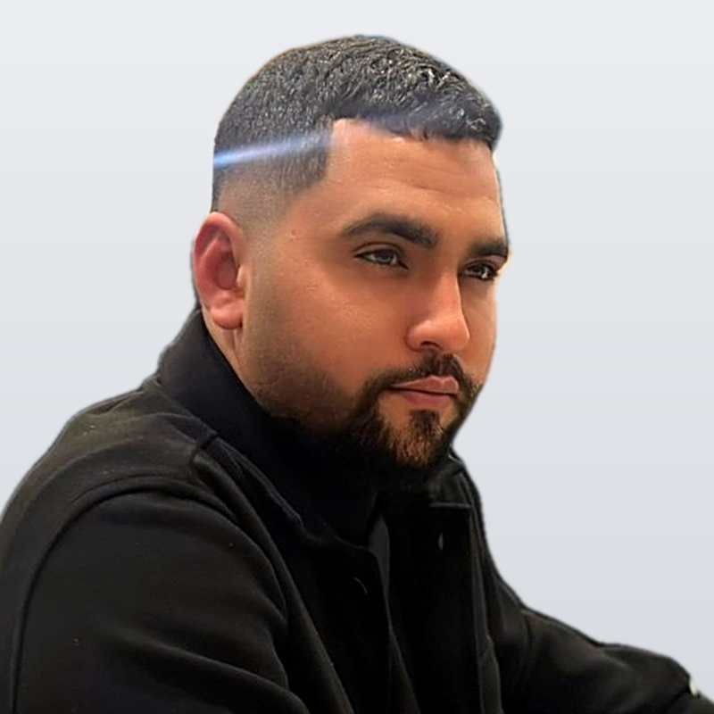

Oday Haj
Hardware Test Engineer · 4G/5G RF · Test Automation · HW/FW/FPGA Debug
I define, develop and automate tests for 4G/5G radio hardware at Parallel Wireless, and I debug failures to root cause across hardware, firmware and FPGA.

About
I'm a hardware test engineer who enjoys turning manual lab work into reliable, automated test flows, and finding problems before customers do. I work at the boundary of RF, hardware, firmware and software: writing Python test automation that drives Keysight instruments, running it in CI, and digging into failures with FPGA, firmware and PHY engineers.
My background is a B.Sc. in Electrical & Electronics Engineering from Braude College with a VLSI and VHDL focus. I'm an early adopter of AI coding tools (Claude Code) in daily engineering work, using them to write and review test code, analyze logs and move faster.
I'm especially interested in silicon and hardware test: improving coverage, test time and yield.
Experience
Where I've worked and what I've delivered.
Validation Engineer, Hardware Test Development & Automation
- Define, develop and automate RF conformance tests for 4G/5G radio hardware (3GPP TS 36.141 / 38.141) on Keysight signal generators and spectrum analyzers.
- Moved 7+ new hardware variants from lab to automated regression: bring-up, calibration, test-plan review, automated test development, then daily CI and nightly runs.
- Expanded coverage: PA protection and shutdown, timing alignment across all bands, signal playback, new channel bandwidths and multi-radio configurations, plus KPI pass/fail reporting and automatic device-log capture.
- Led the CI & Nightly Enhancements epic: zero aborted runs across all pipelines, stable results across all bands, shorter run time.
- Protected test integrity by finding and fixing false passes in sensitivity, calibration and firmware-upgrade flows.
- Root-caused 20+ hardware/firmware defects with FPGA, firmware and PHY engineers (receiver power, clocking, ADC and output-power issues).
- Work daily on Linux, connecting to DUs and radio units over SSH, hands-on with PHY and firmware to configure, test and debug.
- Built a Python test-signal generator that regenerates vendor test waveforms for new bandwidths, bit-accurate to ±1 LSB.
- Supported firmware, FPGA, PHY, DevOps and release teams; set up Jenkins test pipelines, ran release regressions and onboarded new teammates.
Robotics Mentor
- Taught robotics and electronics to school students: building, programming and testing robots.
- Guided teams from idea to working prototype, including hardware and code debugging.
Karate Coach
- Coached athletes of all ages for 8+ years and led them in competitions. Built leadership, patience and the ability to explain complex things simply.
Inside My Work at Parallel Wireless
The main projects I've owned or driven as a hardware test & validation engineer on 4G/5G radio units.
New Hardware Variants → Automated Regression
Took 7+ new radio hardware variants from the lab bench all the way into automated daily regression.
- Bring-up
- Calibration
- Test-plan review
- Automated test development
- Daily CI & nightly runs
CI & Nightly Enhancements Epic (Lead)
Led the effort to make the automated test system reliable and faster.
- Zero aborted runs across all pipelines
- Stable, repeatable results across all frequency bands
- Shorter total run time
- Set up Jenkins test pipelines together with DevOps
Test Coverage Expansion
Wrote new automated tests for areas that weren't covered before:
- PA (power amplifier) protection and PA shutdown
- Timing alignment across all bands
- Signal playback
- New channel bandwidths and multi-radio configurations
- KPI pass/fail columns in reports + automatic device-log capture on every run
Hunting False Passes
A test that passes when it shouldn't is worse than no test. I found and fixed false passes in several areas:
- Receiver tests accepting invalid measurement data
- Calibration flows using the wrong reference values
- Firmware-upgrade flows that could skip a step without failing
Hardware / Firmware Root-Cause Analysis
Root-caused 20+ defects together with FPGA, firmware and PHY engineers, across areas such as:
- Receiver measurement accuracy
- Clocking and synchronization
- Transmit output power
- Data-converter (ADC) behaviour
Python Test-Signal Generator
Some new channel bandwidths had no vendor test waveforms, which blocked testing. I built a Python tool that reverse-engineers the existing vendor waveforms and regenerates them for the new bandwidths, bit-accurate to ±1 LSB.
PythonNumPyDSPSignal StudioAI-Accelerated Test Engineering
Early adopter of Claude Code (an AI coding agent) in daily test work:
- Reverse-engineering and regenerating test waveforms
- Writing and reviewing test code
- Analyzing device logs
- Turning automation code into step-by-step lab procedures
- Drafting detailed Jira defect reports
Hands-On Across the Radio Stack: Linux, DU, PHY & FW
Most of my day happens on Linux, close to the system under test:
- Connecting to DUs (Distributed Units) and radio units over SSH to configure, run and debug tests
- Collecting and reading device logs straight from the target
- Working directly with PHY and firmware engineers to reproduce issues and verify fixes
- Validating firmware upgrades and their effect on RF behaviour
Supporting Teams & Releases
The go-to test contact for several teams at once: firmware, FPGA, PHY, DevOps and release.
- Ran release regressions
- Answered test and setup questions across teams
- Wrote the lab's manual test procedure
- Ramped up new teammates on benches, tools and test flows
How My Test Setup Works
A simplified view of the automated RF test flow I build and run.
Standards & Concepts I Work With
The technical background behind the tests.
3GPP TS 36.141 / 38.141
The official 3GPP conformance test specifications for LTE (36.141) and 5G NR (38.141) base stations. They define how to measure a base station's transmitter (for example output power, signal quality and unwanted emissions) and receiver (for example sensitivity and selectivity), and the limits it must meet.
RF Transmitter & Receiver Testing
Transmitter tests check that the radio sends the right power, cleanly, without leaking into neighbouring channels. Receiver tests check that it can still decode weak signals correctly. A spectrum analyzer measures what the radio sends; a signal generator creates the signals it must receive.
O-RAN Fronthaul (NETCONF)
O-RAN defines open interfaces between the radio unit and the rest of the base station. The management plane uses NETCONF to configure and monitor the radio unit, which is part of setting up and controlling it during testing.
DU, PHY & Firmware
In a 4G/5G base station, the DU (Distributed Unit) runs the real-time baseband processing, including the PHY (physical layer), and connects to the radio unit over the fronthaul. Many RF problems are really PHY or firmware problems, so testing means working across all of these layers, usually over SSH on Linux.
PTP Timing
Precision Time Protocol (IEEE 1588) keeps radios synchronized to a common clock. Cellular radios need tight timing, so clock-sync lock time and timing alignment are things I verify.
SCPI Instrument Control
SCPI is the standard command language for test instruments. My Python tests use it to set up the signal generators and analyzers, run measurements and read back results, with no manual clicking.
Test Integrity
Automation is only valuable if it's trustworthy. I validate the tests themselves: checking for impossible values, wrong calibration sources and skipped steps, so a "pass" really means pass.
Academic Projects
Engineering projects from my B.Sc. at Braude College.
AI-Driven Drone (Final Project)
Real-time gesture and face-recognition control on a Raspberry Pi 4. Found and fixed the communication-lag bottleneck to make control responsive.
PythonComputer VisionRaspberry PiEmbeddedVHDL Serial Communication System
Synchronous serial link with built-in error detection; simulated and verified in ModelSim, implemented in Quartus.
VHDLFPGAModelSimQuartusLow-Power IoT Sensor & Autonomous Cart
Reliable data over a lossy wireless link; analog front end designed with a current mirror and a differential amplifier.
IoTAnalog DesignEmbeddedPneumonia Detection with CNNs
Deep-learning models trained on 5,863 labelled chest X-rays, evaluated on a separate held-out test set.
PythonDeep LearningCNNUltrasonic Distance Sensor
Microcontroller project using an SRF04 ultrasonic sensor to transmit and receive a pulse and compute distance.
MicrocontrollersCSensorsSkills
Tools and standards I use day to day.
- Test & Measurement
- Keysight MXG / EXM / PXAVNASpectrum analyzersPathWave Signal StudioSCPIWireshark
- Programming & Automation
- PythonNumPypytestBashJenkinsGitLab CIDockerLinuxSSHGitJira
- Hardware & Design
- VHDLFPGAVLSICadenceQuartusModelSimLTspiceMATLABLabVIEW
- Standards
- 3GPP TS 36.141 / 38.141LTE / 5G NRDU / RU architecturePHY & firmwareO-RAN fronthaul (NETCONF)PTP timing
- AI Tools
- Claude CodeAI-assisted test developmentLog analysis
Education & Certifications
B.Sc. Electrical & Electronics Engineering
Braude College of Engineering, Karmiel · VLSI, VHDL, Signal Processing, Microcontrollers, Power Electronics · Teaching Assistant, Power Systems Lab
Power Systems Completion Program
Kinneret Academic College
Developing AI Applications with Python and Flask
IBM
Introduction to Artificial Intelligence
IBM
Python Project for AI and Application Development
Coursera
Let's talk
Open to conversations about hardware test, validation and test automation.